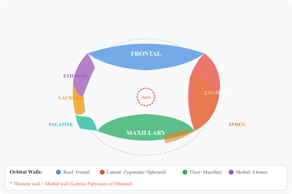
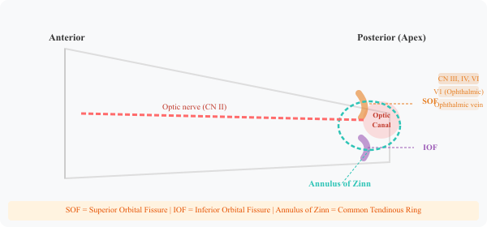

The bony framework protecting and housing the eye — from 7 bones to cranial nerve passages


The orbit is a pear-shaped bony cavity in the skull that protects and houses the eyeball, along with its muscles, nerves, blood vessels, and part of the lacrimal (tear) system. Think of it as a bony cone with the apex pointing backward and the base open at the front.
The orbit is formed by contributions from 7 bones, which form its four walls:
| Wall | Bones | Key Feature |
|---|---|---|
| Roof | Frontal bone + Lesser wing of Sphenoid | Contains lacrimal gland fossa |
| Medial | Ethmoid (Lamina Papyracea), Lacrimal, Maxillary, Sphenoid | Thinnest wall |
| Floor | Maxillary, Zygomatic, Palatine | Prone to "blow-out" fractures |
| Lateral | Zygomatic + Greater wing of Sphenoid | Strongest wall |
The apex is the most clinically important region of the orbit. It contains:
Orbital Apex Syndrome: Complete ophthalmoplegia along with optic nerve involvement points to a lesion at the very apex, hitting both the SOF and the optic canal at the same time.
The common tendinous ring (Annulus of Zinn) is a fibrous ring surrounding the optic canal and part of the SOF. All 4 rectus muscles originate from it, which is why it divides the orbit into two important spaces.
The medial wall is formed largely by the Lamina Papyracea of the ethmoid bone. The name means "paper plate" and it is quite literal. This is the thinnest wall of the orbit.
Ethmoid sinusitis can quietly erode through this thin plate, spreading infection into the orbit and causing orbital cellulitis. In children, this is the most common reason for proptosis.
Blow-out fractures hit the orbital floor (maxillary bone) most often. The inferior rectus muscle gets trapped in the fracture, and the patient cannot look upward without seeing double.